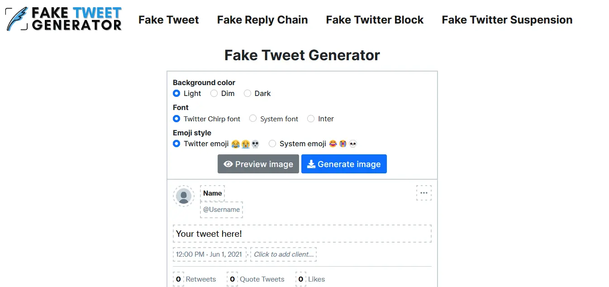
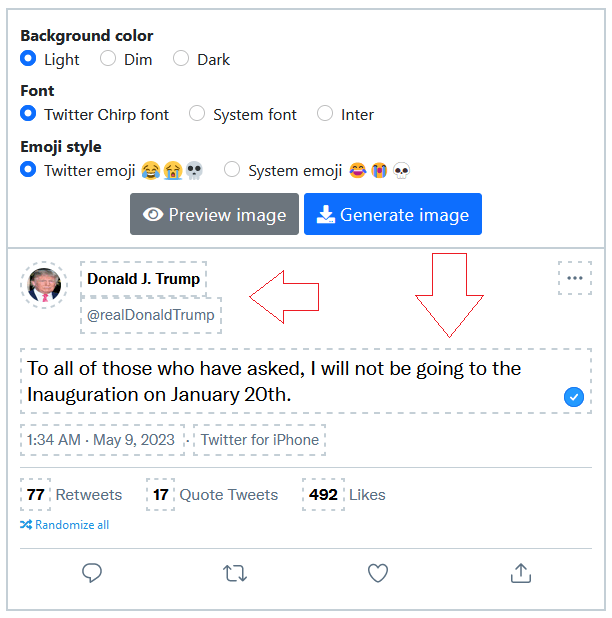
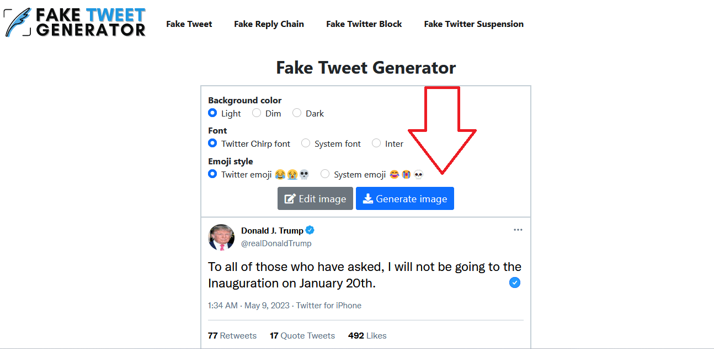
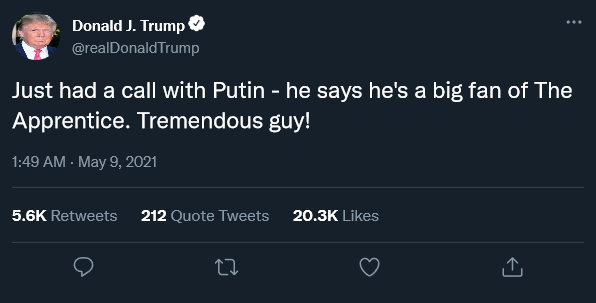
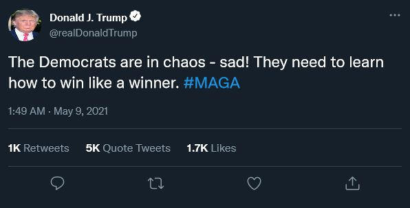
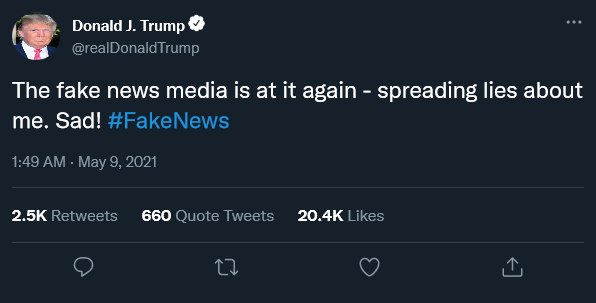

How to Make Trump Twitter Tweet Only in 10 Seconds
Are you tired of manually typing your tweets? Do you want to automate your tweets like a pro? Former US President Donald Trump was one such figure who made headlines with his tweets.
Trump Twitter Tweet
His tweets were often controversial and generated a lot of buzz on social media platforms.
Why make a fake Trump tweet?
Creating a fake Trump tweet can be used for various purposes, including entertainment or political satire. It can also generate engagement on social media platforms or make a statement on a particular issue. To make a convincing fake tweet you'll want to choose a profile picture that looks similar to the one used by the real user.
However, it is important to note that creating a fake tweet to spread misinformation is unethical and can have serious consequences.
Best Tools to Make Fake Tweets
Fake Tweet is the only tool that makes fake tweets of anybody in seconds without designing skills. With the help of fake tweet online you can do the following things
Let's dive into the essential steps of making Trump's Twitter tweets in a secondsHow to make a fake Trump tweet?
Making a fake Trump tweet is a simple
process that can be done in a few steps.
Here's how:
Step 1: Choose Best Fake Tweet Generator
Several tweet generators are available online that allow you to create a fake tweet. But Fake Tweet Maker has pre-built Templates, as you can see in the given picture, that you can use to create a fakeTrump tweet.
Step 2: Select Color, Font and System
- Background Color Among mention three options, Light, Dim, and Dark, select the one which you want for a fake tweet.
- Fonts Among mention three fonts formate, Twitter Chirp, System font, and Inter select the one which you want for a fake tweet
- Emoji Style Choose an emoji style for fake Tw according to your choice. There are two emoji styles given Twitter emoji and system emoji.
Step 3: Select Profile Picture & Enter Fake Twitter Account Name and UserName
Use a picture of Donald Trump or a picture resembling him. It is important to note that using a copyrighted image without permission can have legal consequences. We are using just for educational purposes only. The next step is to choose a profile picture for your fake Trump tweet. Make sure the user name of the account and the account holder's name should be similar to Donald Trump's official account name, which you want to clone.
The official name of trump twitter is Donald J. Trump and user name is @DonaldTrump.

Step 4: Write the Fake Tweet Text and Select Date and Time
Once you have chosen the system's background color, fonts, and emoji, the next step is to write the fake Twitter tweet text for Trump. You can either use a pre-written template or write your own tweet. If you are writing your own tweet, it is essential to remember Donald Trump's writing style, often characterized by capital letters, exclamation marks, and provocative language.
Step 5: Download Free Trump Fake Tweet
After previewing the tweet, if you are satisfied with the data and other things, click the generate button to download the tweet.
Examples of Fake Trump Tweets
To give you some inspiration, here are a few examples of fake Trump tweets that are sure to get a laugh:- "Just had a call with Putin - he says he's a big fan of The Apprentice. Tremendous guy!" 
- "The Democrats are in chaos - sad! They need to learn how to win like a winner. #MAGA" 
- "The fake news media is at it again - spreading lies about me. Sad! #FakeNews" 
How Trump's Tweets Affected Social Media Engagement
Trump's tweets had a significant impact on social media engagement. According to a study by Pew Research Center, his tweets generated more engagement than those of any other politician. His tweets often went viral and sparked conversations on social media platforms. This led to increased engagement on his own account and other accounts that shared or responded to his tweets.
Trump's tweets also polarized people and created echo chambers, where individuals only interacted with those who shared their views.
The Role of Media in Trump's Twitter Influence
The media played a significant role in amplifying Trump's Twitter influence. News outlets often reported on his tweets, which further increased their visibility. This helped Trump bypass traditional media and communicate directly with the public. However, this also led to concerns about the media's role in amplifying false or misleading information.
Trump often used his tweets to spread misinformation and attack his opponents.
The Impact of Trump's Tweets on Politics
Trump's tweets had a significant impact on politics. His tweets often influenced policy decisions and public opinion. For example, his tweets about immigration and the border wall shaped the public debate on these issues. His tweets also caused controversy within his own administration and led to resignations. Trump's use of Twitter also changed the way politicians communicate with the public. It showed that social media can be a powerful tool for political communication.
Trump's Twitter Legacy
Trump's use of Twitter has left a lasting impact on social media and politics. It has shown the power of social media to influence public opinion and shape political discourse. However, it has also raised concerns about the role of social media in spreading false information and polarizing people.
Trump’s Most Controversial Tweets
Retweeting anti-Muslim videos from a far-right British group called Britain First.
Suggesting that injecting disinfectant or ultraviolet light could cure COVID-19.
Conclusion
Creating a fake Trump tweet can be a fun and creative way to express your opinion or generate engagement on social media platforms. However, it is essential to use it responsibly and avoid spreading misinformation. With the right tools and techniques, anyone can create a fake Trump tweet that looks and feels realistic.
Note: This is only for educational purposes only
Frequently Asked Questions
According to a study by Factba.se, Trump’s most active day on Twitter was January 6, 2021, when he posted 161 tweets and retweets.
Donald Trump's Twitter account was temporarily locked twice for violating Twitter's policies. The first instance occurred on January 6, 2021, during the U.S. Capitol riot, due to tweets that incited violence. His account was locked for 12 hours, and he had to delete three offending tweets to regain access. The second lockout took place on January 8, 2021, for tweets that glorified violence and risked incitement.
Share with your friends:
Generate Free Fake Twitter Tweets, Fake Twitter Reply Chains, Fake Twitter account suspension and fake twitter account block with using any designing tool like Photoshop, Canva and any other.